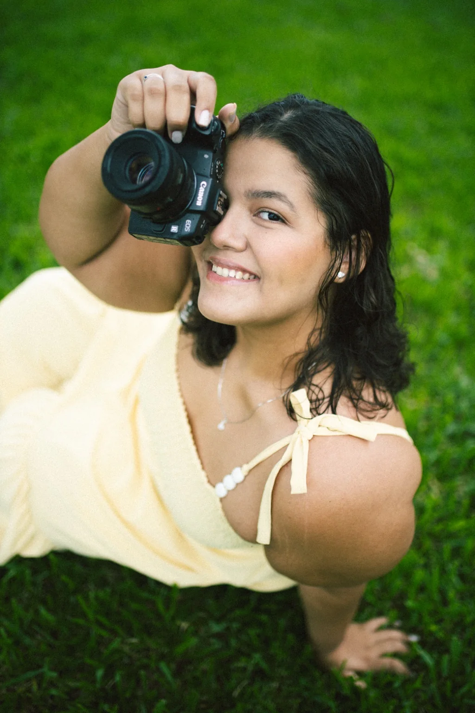

JL Fotografia
Histórias que merecem permanecer.
Casamentos, famílias, sacramentos, eventos e histórias reais — registradas com cuidado, sensibilidade e intenção.
retratos profissionais
Para profissionais, empreendedoras e marcas que querem mostrar quem são com mais verdade.
essencial
R$ 350
10 fotos editadas · no seu estabelecimento · direção durante o ensaio.
Quero meu ensaio →
marca completa
a partir de R$ 590
20 fotos · retratos + ambiente + detalhes do negócio + cenas trabalhando.
Consultar agenda →
equipe
sob medida
Retratos individuais, equipe, ambiente e imagens para comunicação institucional.
Pedir orçamento →
fotografia de produto & cardápio
Seu produto também conta uma história.
Imagens pensadas para valorizar textura, detalhe, apresentação e desejo — para cardápios, catálogos e redes sociais.
Mini catálogoa partir de R$ 250até 10 produtos · fotos individuais e detalhes
Catálogo de marcaa partir de R$ 450até 25 produtos · variações, composições e detalhes